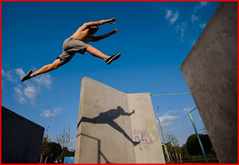
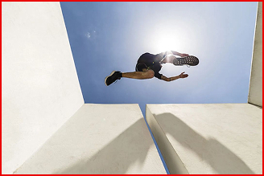

Freerunnen is een leuk sport die je alleen of met wie dan ook kan doen, als je binnen of buiten bent, maar wat heb je nodig? wat moet je aan hebben? als je buiten wil gaan dan waar moet je naartoe? hier kan je alles uitvinden over freerunnen.
Over freerunnen

Wat is freerunnen
Een salto in de lucht
Freerunnen is een sport waar je in alles doet, springen, klimmen, flips, wallruns en nog veel meer. het is een goede sport om voor te kiezen als je niet houdt van team sports, zoals voetbal of basketball of gewoon als je eerder zelf iets doen en leren.
Beginnen met freerunnen

Een sprong gezien van onderaf
Freerunnen kan well erg gevaarlijk zijn als je geen ervaring hebt en gewoon meteen wilt gaan beginnen, het klinkt allemaal super leuk, van dak naar dak springen, backflips doen, vanaf hoge dingen springen, maar je moet als aller eerst de basis kennen en leren.
Lessen volgen
Een sprong tussen twee betonblokken
Je kunt je aanmelden om lessen over freerunnen te krijgen, daar leer je alles wat jij wilt. eerst begin je bij de basis en daarna mag je zelf ook kiezen wat je wilt leren, dus wil je een front flip leren, ga naar de leraar en vraag het aan hem en hij zal je op de goede pad sturen.